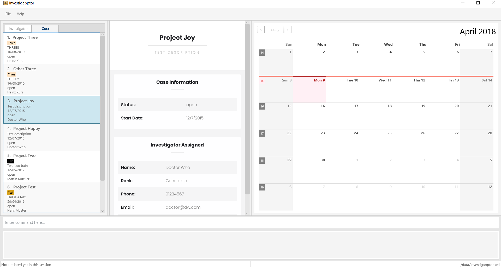

By: Team F14-B3 Since: Mar 2018 Licence: MIT
- 1. Introduction
- 2. Quick Start
- 3. Features
- 3.1. Viewing help :
help - 3.2. Registering an investigator:
registerInvestigator - 3.3. Adding a case:
add - 3.4. Listing all investigators :
listInvestigator - 3.5. Listing all cases :
listCase - 3.6. Editing an investigator :
editInvestigator - 3.7. Editing a case :
editCase - 3.8. Locating investigators by name:
findInvestigator - 3.9. Locating cases by name:
findCase - 3.10. Locating investigators by category/team:
findTags - 3.11. Deleting an investigator :
deleteInvestigator - 3.12. Deleting a case :
deleteCase - 3.13. Selecting an investigator :
selectInvestigator - 3.14. Selecting a case :
selectCase - 3.15. Listing entered commands :
history - 3.16. Undoing previous command :
undo - 3.17. Redoing the previously undone command :
redo - 3.18. Clearing all entries :
clear - 3.19. Exiting the program :
exit - 3.20. Saving the data
- 3.21. Adding a witness
[coming in v2.0] - 3.22. Adding a suspect
[coming in v2.0] - 3.23. Adding evidence files
[coming in v2.0] - 3.24. Setting up chain of custody
[coming in v2.0] - 3.25. Entering commands in other languages
[coming in v2.0] - 3.26. Adding any person via scanner
[coming in v2.0] - 3.27. Exporting case information into a PDF file
[coming in v2.0] - 3.28. Encrypting data files
[coming in v2.0]
- 3.1. Viewing help :
- 4. FAQ
- 5. Command Summary
1. Introduction
Investigapptor (IA) is desktop application for a team of investigators to easily manage criminal cases that have been
delegated to them. {More to be added subsequently}
Investigapptor v1.5 is available for Windows, Mac OS X, Linux and Unix operating systems
2. Quick Start
-
Ensure you have Java version
1.8.0_60or later installed in your Computer.Having any Java 8 version is not enough.
This app will not work with earlier versions of Java 8. -
Download the latest
addressbook.jarhere. -
Copy the file to the folder you want to use as the home folder for your Address Book.
-
Double-click the file to start the app. The GUI should appear in a few seconds.
 -
Type the command in the command box and press Enter to execute it.
e.g. typinghelpand pressing Enter will open the help window. -
Some example commands you can try:
-
list: lists all contacts -
addn/John Doe p/98765432 e/johnd@example.com a/John street, block 123, #01-01: adds a contact namedJohn Doeto the Address Book. -
delete3: deletes the 3rd contact shown in the current list -
exit: exits the app
-
-
Refer to Section 3, “Features” for details of each command.
3. Features
Command Format
-
Words in
UPPER_CASEare the parameters to be supplied by the user e.g. inadd n/NAME,NAMEis a parameter which can be used asadd n/John Doe. -
Items in square brackets are optional e.g
n/NAME [t/TAG]can be used asn/John Doe t/friendor asn/John Doe. -
Items with
… after them can be used multiple times including zero times e.g.[t/TAG]…can be used ast/friend,t/friend t/familyetc. -
Parameters can be in any order e.g. if the command specifies
n/NAME p/PHONE_NUMBER,p/PHONE_NUMBER n/NAMEis also acceptable.
3.1. Viewing help : help
Format: help
3.2. Registering an investigator: registerInvestigator
Registers an investigator to the application
Format: registerInvestigator n/NAME p/PHONE_NUMBER e/EMAIL a/ADDRESS [t/TAG]…
Alias: regInvest
| An investigator can have any number of tags (including 0) * Tags are alphanumeric without spaces |
Examples:
-
registerInvestigator n/John Doe p/98765432 e/johnd@example.com a/John street, block 123, #01-01 t/newcomer -
registerInvestigator n/Betsy Crowe t/teamA e/betsycrowe@example.com a/Tampines Street, Block 145 p/1234567 -
regInvest n/Lim Choo t/teamC e/choochoo@example.com a/Bedok Street, Block 789 p/1234567
3.3. Adding a case: add
Adds a case to the application
Format: add [n/CASE_NAME] [d/DESCRIPTION] [i/INDEX] [s/START_DATE] [t/TAG]…
Alias: a
| A case can have any number of tags (including 0) |
Examples:
-
add n/Geylang Rape d/Rape at geylang i/1 s/12/05/1994 t/Rape t/prostitution -
add n/Bedok Riot i/3 s/12/05/2017 d/Riot at bedok 85 t/Rape t/prostitution -
a n/Geylang Rape d/Rape at geylang i/1 s/12/05/1994
3.4. Listing all investigators : listInvestigator
Shows a list of all investigators in the Investigapptor.
Format: list
Alias: lI
3.5. Listing all cases : listCase
Shows a list of all cases in the Investigapptor.
Format: listCase
Alias: lC
3.6. Editing an investigator : editInvestigator
Edits an existing investigator in the Investigapptor.
Format: editInvestigator INDEX [n/NAME] [p/PHONE] [e/EMAIL] [a/ADDRESS] [t/TAG]…
Alias: eI
Examples:
-
editInvestigator 1 p/91234567 e/johndoe@example.com
Edits the phone number and email address of the 1st investigator to be91234567andjohndoe@example.comrespectively. -
eI 2 n/Betsy Crower t/
Edits the name of the 2nd investigator to beBetsy Crowerand clears all existing tags.
3.7. Editing a case : editCase
Edits an existing case in the Investigapptor.
Format: editCase INDEX [n/NAME] [d/DESCRIPTION] [i/INVESTIGATOR] [sd/STARTDATE] [s/STATUS] [t/TAG]…
Alias: eC
Examples:
-
editCase 1 d/some description i/John Doe
Edits the description and investigator of the 1st case to besome descriptionandJohn Doe@respectively. -
eC 2 i/Betsy Crower t/
Edits the investigator of the 2nd case to beBetsy Crowerand clears all existing tags.
3.8. Locating investigators by name: findInvestigator
Finds investigators whose names contain any of the given keywords.
Format: find KEYWORD [MORE_KEYWORDS]
Alias: fI
Examples:
-
findInvestigator John
ReturnsjohnandJohn Doe -
fI Betsy Tim John
Returns any investigators having namesBetsy,Tim, orJohn
3.9. Locating cases by name: findCase
Finds cases whose names contain any of the given keywords.
Format: find KEYWORD [MORE_KEYWORDS]
Alias: fC
Examples:
-
findCase SPF
ReturnsSPF MurderandSPF rape -
findCase murder rape arson
Returns any cases having namesmurder,rape, orarson
3.10. Locating investigators by category/team: findTags
Find investigators whose tags contain any of the given keywords.
Format: findTags KEYWORD [MORE_KEYWORDS]
Alias: ft
Examples:
-
findTags teamA
Returns investigator(s) with tagteamA -
find teamA new teamb
Returns investigator(s) having tagsteamA,new, ORteamb -
ft teamc newbie a
Returns investigator(s) having tagsteamc,newbie, ORa
3.11. Deleting an investigator : deleteInvestigator
Deletes the specified person from the address book.
Format: deleteInvestigator INDEX
Alias: dI
Examples:
-
listInvestigator
deleteInvestigator 2
Deletes the 2nd investigator in the address book. -
findInvestigator Betsy
dI 1
Deletes the 1st investigator in the results of thefindInvestigatorcommand.
3.12. Deleting a case : deleteCase
Deletes the specified case from the address book.
Format: deleteCase INDEX
Alias: dC
Examples:
-
listCase
deleteCase 2
Deletes the 2nd case in the address book. -
findCase Arson
dC 1
Deletes the 1st case in the results of thefindCasecommand.
3.13. Selecting an investigator : selectInvestigator
Selects the person identified by the index number used in the last person listing.
Format: selectInvestigator INDEX
Alias: selectInvest
Examples:
-
list
selectInvestigator 2
Selects the 2nd person in the results of thelistcommand. -
findInvestigator Betsy
selectInvest 1
Selects the 1st person in the results of thefindcommand. -
selectInvestigator 3
Selects the 3rd person in the listed panel list.
3.14. Selecting a case : selectCase
Selects the case identified by the index number used in the last case listing.
Format: selectCase INDEX
Alias: sC
Examples:
-
listCase
selectCase 2
Selects the 2nd case in the results of thelistCasecommand. -
findCase murder
selectCase 1
Selects the 1st case in the results of thefindCasecommand. -
sC 3
Selects the 3rd case in the listed panel listCase.
3.15. Listing entered commands : history
Lists all the commands that you have entered in reverse chronological order.
Format: history
Alias: hist
|
Pressing the ↑ and ↓ arrows will display the previous and next input respectively in the command box. |
3.16. Undoing previous command : undo
Restores the address book to the state before the previous undoable command was executed.
Format: undo
Alias: u
|
Undoable commands: those commands that modify the address book’s content ( |
Examples:
-
delete 1
list
undo(reverses thedelete 1command) -
select 1
list
undo
Theundocommand fails as there are no undoable commands executed previously. -
delete 1
clear
undo(reverses theclearcommand)
undo(reverses thedelete 1command)
3.17. Redoing the previously undone command : redo
Reverses the most recent undo command.
Format: redo
Alias: r
Examples:
-
delete 1
undo(reverses thedelete 1command)
redo(reapplies thedelete 1command) -
delete 1
redo
Theredocommand fails as there are noundocommands executed previously. -
delete 1
clear
undo(reverses theclearcommand)
undo(reverses thedelete 1command)
redo(reapplies thedelete 1command)
redo(reapplies theclearcommand)
3.18. Clearing all entries : clear
Clears all entries from the address book.
Format: clear
Alias: c
3.19. Exiting the program : exit
Exits the program.
Format: exit
Alias: ex
3.20. Saving the data
Address book data are saved in the hard disk automatically after any command that changes the data.
There is no need to save manually.
3.28. Encrypting data files [coming in v2.0]
{explain how the user can enable/disable data encryption}
4. FAQ
Q: How do I transfer my data to another Computer?
A: Install the app in the other computer and overwrite the empty data file it creates with the file that contains the data of your previous Address Book folder.
5. Command Summary
-
Add
add n/NAME p/PHONE_NUMBER e/EMAIL a/ADDRESS [t/TAG]…
e.g.add n/James Ho p/22224444 e/jamesho@example.com a/123, Clementi Rd, 1234665 t/friend t/colleague -
Clear :
clear -
Delete :
delete INDEX
e.g.delete 3 -
Edit :
edit INDEX [n/NAME] [p/PHONE_NUMBER] [e/EMAIL] [a/ADDRESS] [t/TAG]…
e.g.edit 2 n/James Lee e/jameslee@example.com -
Find :
find KEYWORD [MORE_KEYWORDS]
e.g.find James Jake -
List :
list -
Help :
help -
Select :
select INDEX
e.g.select 2 -
History :
history -
Undo :
undo -
Redo :
redo